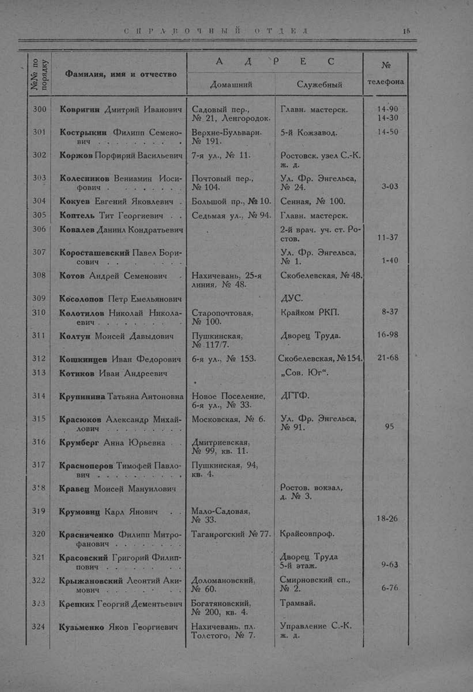

Лист источника 63
Скан

Распознанный текст
СПРАВОЧНЫЙ ОТДЕЛ 15
№№ по
порядку Фамилия, имя и отчество АДРЕС №
телефона
Домашний Служебный
300 Ковригин Дмитрий Иванович Садовый пер.,
№ 21, Ленгородок. Главн. мастерск. 14-90
14-30
301 Кострыкин Филипп Семено-
вич . . . . . . . . . Верхне-Бульварн.
№ 191. 5-й Кожзавод. 14-50
302 Коржов Порфирий Васильевич 7-я ул., № 11. Ростовск. узел С.-К.
ж. д.
303 Колесников Вениамин Иоси-
фович . . . . . . . . . Почтовый пер.,
№ 104. Ул. Фр. Энгельса,
№ 24. 3-03
304 Кокуев Евгений Яковлевич Большой пр., № 10. Сенная, № 100.
305 Коптель Тит Георгиевич . . Седьмая ул., № 94. Главн. мастерск.
306 Ковалев Даниил Кондратьевич 2-й врач. уч. ст. Ро-
стов. 11-37
307 Коросташевский Павел Бори-
сович . . . . . . . . . Ул. Фр. Энгельса,
№ 1. 1-40
308 Котов Андрей Семенович . Нахичевань, 25-я
линия, № 48. Скобелевская, № 48.
309 Косолопов Петр Емельянович ДУС.
310 Колотилов Николай Никола-
евич . . . . . . . . . Старопочтовая,
№ 100. Крайком РКП. 8-37
311 Колтун Моисей Давыдович Пушкинская,
№ 117/7. Дворец Труда. 16-98
312 Кошкинцев Иван Федорович 6-я ул., № 153. Скобелевская, № 154. 21-68
313 Котиков Иван Андреевич „Сов. Юг“.
314 Крупинина Татьяна Антоновна Новое Поселение,
6-я ул., № 33. ДГТФ.
315 Красюков Александр Михай-
лович . . . . . . . . . Московская, № 6. Ул. Фр. Энгельса,
№ 91. 95
316 Крумберг Анна Юрьевна . Дмитриевская,
№ 99, кв. 11.
317 Красноперов Тимофей Павло-
вич . . . . . . . . . Пушкинская, 94,
кв. 4.
318 Кравец Моисей Мануилович Ростов. вокзал,
д. № 3.
319 Крумовиц Карл Янович . Мало-Садовая,
№ 33. 18-26
320 Красниченко Филипп Митро-
фанович . . . . . . . . Таганрогский № 77. Крайсовпроф.
321 Красовский Григорий Филип-
пович . . . . . . . . . Дворец Труда
5-й этаж. 9-63
322 Крыжановский Леонтий Аки-
мович . . . . . . . . . Доломановский,
№ 60. Смирновский сп.,
№ 2. 6-76
323 Крепких Георгий Дементьевич Богатяновский,
№ 200, кв. 4. Трамвай.
324 Кузьменко Яков Георгиевич Нахичевань, пл.
Толстого, № 7. Управление С.-К.
ж. д.